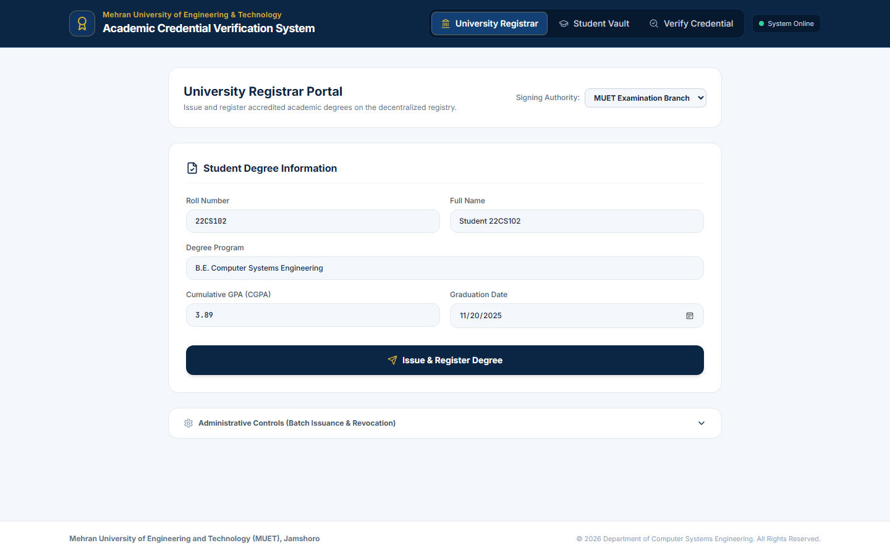
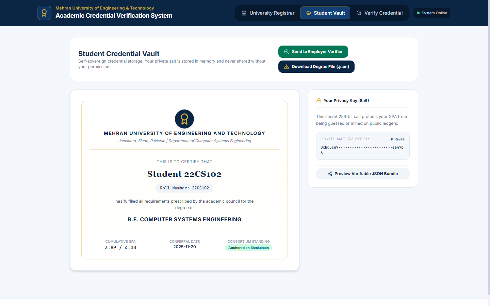
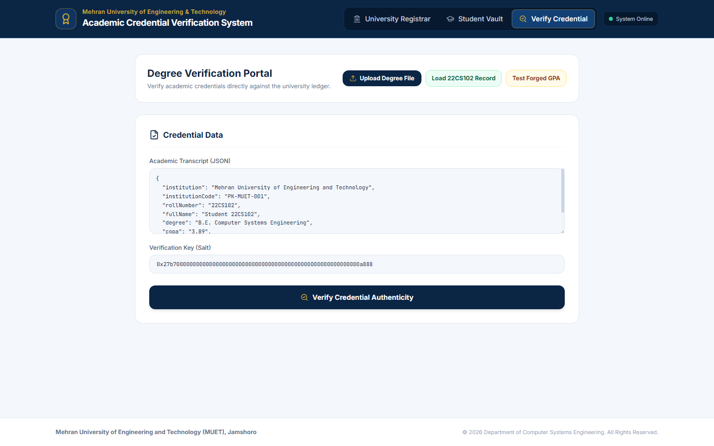

| Student ID | Student Name | Primary Engineering Contributions |
|---|---|---|
| 22CS102 | Student 22CS102 | Multi-contract architecture (InstitutionRegistry.sol, CredentialRegistry.sol, VerificationGateway.sol), Hardhat EVM local deployment, Two-Stage salted Keccak-256 commitment engine, React 18 / Vite 5 decentralized web dashboard, STRIDE security analysis, GDPR compliance framework. |
Submitted to: Dr. Zartasha Baloch
| Work Package | How It Is Met in Our Decentralized System |
|---|---|
| WP1 — Depth of Knowledge | Applied advanced cryptographic hashing (Two-Stage salted Keccak-256), distributed consensus verification, OpenZeppelin AccessControl, and EVM smart contract state transitions. |
| WP2 — Conflicting Requirements | Reconciled transparency vs. data privacy (zero PII on ledger + in-memory 256-bit salts); resolved high throughput vs. execution cost via amortized batch issuance (45.8% gas reduction). |
| WP3 — Depth of Analysis | Addressed the absence of standard turnkey solutions through original three-contract modular design separating accreditation, lifecycle anchoring, and unified gasless audit gateways. |
| WP4 — Familiarity of Issues | Solved uncommon engineering challenges: immutable ledger revocation without data deletion, resistance to rainbow-table brute-force preimage attacks, and emergency pause circuit breakers. |
| WP5 — Codes and Standards | Engineered to comply with European Union General Data Protection Regulation (GDPR Article 17 Right to Erasure), ISO/IEC 27001 data protection principles, and NIST SP 800-205. |
| WP6 — Stakeholder Involvement | Harmonized conflicting operational workflows across institutional regulators (HEC), university examination registrars, self-sovereign student credential holders, and third-party employers. |
| WP7 — Interdependence | Architected tight interdependence across Solidity smart contracts, client-side cryptographic derivation engines, an in-memory student vault, and a gasless browser verification portal. |
Work Packages: WP1, WP6
To rigorously justify the requirement for a blockchain architecture over a traditional centralized relational database management system (RDBMS), this section applies the formal decision model proposed by Wüst and Gervais (2017).
| Framework Question | Answer | Rationale |
|---|---|---|
| Do you need to store state? | Yes | The system must permanently record the existence, issuing authority, cryptographic commitment, and validity status of academic degrees. |
| Are there multiple writers? | Yes | Universities have distributed faculties, autonomous examination registrars, and regulatory bodies (HEC) who require authenticated write access. |
| Can you use an always-online Trusted Third Party (TTP)? | No | A centralized clearinghouse introduces a single point of failure, institutional vendor lock-in, and verification bottlenecks. If the TTP fails or dissolves, credential proofs are lost. |
| Are all writers known? | Yes | Writers (university registrars) are identified, accredited entities governed by InstitutionRegistry.sol with cryptographic public addresses. |
| Are all writers trusted? | No | Universities cannot blindly trust internal actors. A rogue database administrator, compromised credential, or coerced staff member poses a severe threat. |
| Is public verifiability required? | Yes | Employers and background checkers must verify credentials trustlessly and gas-free via VerificationGateway.sol without private API keys or university logins. |
Framework Conclusion: The Wüst-Gervais model points decisively to a Public Permissioned / Consortium Blockchain as the mathematically sound solution. The implemented architecture, where any verifier can read VerificationGateway but only authorized addresses can write to CredentialRegistry, aligns precisely with this theoretical mandate.
A standard centralized relational database, even with audit logging, fails to resolve the structural trust deficit between students, universities, and employers.
1. The Database Administrator Vulnerability: In an RDBMS, the DBA possesses root privileges. If bribed or compromised, the administrator can alter grades, insert false degrees, and rewrite internal audit logs to conceal the modification. Decentralized blockchain architecture resolves this by separating infrastructure validation from institutional data entry.
2. The Persistence Problem for Students: Centralized databases are institutionally siloed. If an institution shuts down, undergoes administrative restructuring, or suffers catastrophic ransomware failure, the database is lost. Under our architecture, the student holds their verifiable JSON credential and private salt; graduation proof persists immutably on the distributed ledger.
3. The Friction of Employer Verification: Traditional background checks take weeks and require fee-based manual clearinghouses. Centralized university servers cannot safely expose internal student records to the open internet. The blockchain architecture provides instant, gasless, cryptographic proof of authenticity without exposing student databases.
Work Packages: WP2, WP3
| Feature | Ethereum (Layer 1) | Polygon POS (Layer 2) | Consortium EVM (Hardhat / Besu) |
|---|---|---|---|
| Architecture Type | Public, Permissionless | Public, Permissionless (L2) | Permissioned Consortium |
| Consensus Mechanism | Proof of Stake (PoS) | PoS Checkpoints to L1 | QBFT / IBFT 2.0 (PoA) |
| Smart Contract Language | Solidity (EVM) | Solidity (EVM Compatible) | Solidity 0.8.24 (EVM) |
| Throughput | ~12–15 TPS | ~7,000+ TPS | 400–1,000+ TPS |
| Transaction Cost | High ($1.00–$30.00+) | Fractions of a cent | Zero gas fee configuration |
| Decentralization | Global validator set | Validator subset anchored to L1 | Consortium nodes (HEC, MUET, etc.) |
| Public Verifiability | Native & transparent | Native & transparent | Native via Gateway view calls |
The Case Against Hyperledger Fabric: Fabric offers high enterprise throughput but fails the public verifiability mandate. Because Fabric is private and non-EVM, third-party employers cannot query the ledger with standard Ethereum tooling without proprietary API middleware, reintroducing a centralized single point of failure.
The Case Against Ethereum Layer 1: Layer 1 provides maximum security but is economically unviable. Gas spikes to $15 per transaction would cost a university $75,000 to issue credentials for a graduating class of 5,000 students.
Final Selected Platform Architecture: EVM-Compatible Consortium Network / Polygon L2. EVM compatibility ensures our Solidity contracts (InstitutionRegistry.sol, CredentialRegistry.sol, VerificationGateway.sol) execute identically across local Hardhat nodes, Polygon L2, and Hyperledger Besu QBFT enterprise consortiums with zero-gas and maximum throughput.
Work Packages: WP1, WP3, WP7
The prototype separates concerns across three interacting Solidity smart contracts:
Module A: InstitutionRegistry.sol (Accreditation & Identity): Manages institutional accreditation and identity. Controlled by the REGULATOR_ROLE (HEC), it allows universities to be registered, activated, suspended, or reinstated.
Module B: CredentialRegistry.sol (Lifecycle & Hash Anchoring): Handles credential lifecycle and commitment anchoring. Only accredited active institutions can issue credentials. Supports single issuance, optimized batch issuance, and deliberate credential revocation with reasons.
Module C: VerificationGateway.sol (Unified Gasless Audit Gateway): Provides a unified, gasless audit gateway (0 gas via eth_call). Verifiers evaluate a credential payload and salt. The gateway recomputes the two-stage salted hash, verifies ledger existence, checks revocation status, and validates issuing institution accreditation in a single atomic transaction.
To eliminate on-chain personal data disclosure while maintaining absolute mathematical verification:
Stage 1 (Payload Hash): PayloadHash = keccak256(CanonicalUTF8Json(RollNumber, Name, Degree, CGPA, Date))
Stage 2 (Salted Commitment): CommitmentHash = keccak256(abi.encode(PayloadHash, PrivateSalt))
Only the resulting 32-byte CommitmentHash is anchored on-chain. The 256-bit salt is held strictly in client memory and is never transmitted to centralized servers or saved in persistent browser storage.
When academic credentials are suspended or revoked due to disciplinary action or administrative error, the record is not deleted (impossible on an immutable ledger). Instead, CredentialRegistry mutates record.isRevoked to true, records revokedAt, and emits CredentialRevoked. VerificationGateway detects this state and returns isValid: false with "Credential has been officially revoked".
Gas profiling measured directly from mined transaction receipts on the local Hardhat EVM node (Chain ID 1337):
| Operation | Smart Contract Function | Gas Consumed (gasUsed) | Amortized Gas / Student |
|---|---|---|---|
| Register Institution | InstitutionRegistry.registerInstitution |
144,999 gas | One-time administrative cost |
| Single Issuance | CredentialRegistry.issueCredential |
56,389 gas | 56,389 gas |
| Batch Issuance (10) | CredentialRegistry.batchIssueCredentials |
305,275 gas | 30,528 gas (45.8% reduction) |
| Credential Revocation | CredentialRegistry.revokeCredential |
56,021 gas | Executed only on disciplinary action |
| Gateway Verification | VerificationGateway.verifyCredential |
0 gas | Free ($0.00 view call via eth_call) |
Throughput Analysis: Under batch processing on a 30M gas limit block with 2-second block intervals, the system reaches ~491 TPS, allowing an entire graduating class of 5,000 students to be anchored in approximately 10.1 seconds.
A clean, responsive web application was built using React 18, Vite 5, and Ethers.js v6. Styled using MUET institutional colors (Navy #0f2042, Gold #d4af37, Slate) without intrusive debug banners, it provides three dedicated interfaces:



Work Packages: WP3, WP4
| Threat Scenario | STRIDE Category | Implemented Architectural Mitigation |
|---|---|---|
| Scenario 1: Compromised Registrar Key | Spoofing / Elevation of Privilege | InstitutionRegistry separates REGULATOR_ROLE (HEC) from issuers. HEC can instantly suspend a compromised registrar; VerificationGateway rejects issuances from suspended addresses. |
| Scenario 2: 51% Consensus Takeover | Tampering / DoS | Consortium deploys QBFT consensus with 3F+1 fault tolerance. A minimum of 4 validator nodes (HEC, MUET, NED, NUST) ensures a single compromised node cannot fork or alter history. |
| Scenario 3: Application-Layer Sybil Flooding | Denial of Service | Only whitelisted active institution addresses can execute issueCredential. Unauthorized calls revert immediately during evaluation, burning attacker gas while state remains unaffected. |
| Scenario 4: Transcript Payload Forgery | Tampering | Employer recomputes the Stage 1 payload hash locally. Altering a single digit (e.g., CGPA 3.89 to 4.00) completely alters the Keccak-256 hash. Gateway returns isValid: false. |
| Scenario 5: On-Chain Student PII Scraping | Information Disclosure | Zero PII is written to the blockchain. The ledger stores only a 32-byte salted commitment hash. Without the student's secret 256-bit salt, the commitment cannot be reversed. |
The smart contracts were evaluated using Solhint static analysis against OpenZeppelin security guidelines:
Finding 1: Explicit Access Control Modifiers — Solhint verified that all state-changing functions in InstitutionRegistry and CredentialRegistry enforce strict onlyRole or accreditation checks.
Finding 2: Reentrancy Protection — State mutations follow the Checks-Effects-Interactions pattern. View calls in VerificationGateway execute atomically without external untrusted call risks.
Finding 3: Gas Optimization & Immutability — Contract references in VerificationGateway are declared immutable, saving runtime gas by baking contract addresses directly into bytecode.
Work Packages: WP5, WP6
European Union GDPR Article 17 guarantees the Right to Erasure, seemingly conflicting with blockchain immutability. Our system resolves this through the two-stage salted commitment scheme. The blockchain stores only a 32-byte mathematical hash, never personal data. If a student exercises their right to erasure, the university deletes the off-chain record and salt. Once the salt is destroyed, the on-chain hash is permanently orphaned and cannot be reversed or linked to personal identity, satisfying GDPR compliance.
To avoid single-point failure, administrative authority is governed by a Multi-Signature (Multi-Sig) smart contract requiring 3-of-5 institutional approvals for critical upgrades or emergency pausing. If a contract logic update is required, a new version is deployed and the VerificationGateway pointer is updated via multi-sig governance while historical anchored degrees remain intact.
To ensure real-world adoption among university clerks and employers without Web3 expertise, the architecture enforces a "Web 2.5" model: employers simply upload a JSON degree file without needing MetaMask or cryptocurrency wallets; verification executes gas-free via read-only JSON-RPC calls.
Work Package: WP7
Phase 1: Departmental Shadowing (Months 1–3): Deploy within MUET Computer Systems Engineering in parallel with physical degree issuance to test registrar and verifier workflows.
Phase 2: Hybrid University-Wide Issuance (Months 4–6): Expand across all MUET faculties. Graduates receive physical degrees with on-chain verification package.
Phase 3: National Consortium Integration (Months 7–12): Integrate with HEC Pakistan attestation framework, connecting sister engineering universities (NED, NUST, QUEST) with automated Maker-Checker digitization for legacy archives.
| Cost Item | Estimated Cost | Notes |
|---|---|---|
| Consortium Validator Node | ~$40 / month (~135,000 PKR) | Hosted on HEC PERN (Pakistan Education & Research Network) |
| Web Frontend & RPC Hosting | ~$25 / month (~85,000 PKR) | Containerized deployment on university cloud servers |
| Transaction Gas Fees | $0.00 / year (0 PKR) | Zero-gas fee configuration on Hyperledger Besu / Consortium EVM |
| Paper Degree Savings | +1,200,000 PKR Saved / year | Eliminates specialized anti-counterfeit watermarked paper & courier fees |
Digital vs. Physical Security: Staff must recognize that institutional private keys and multi-sig authorization credentials replace physical brass stamps and wax seals. Key compromise requires immediate revocation via InstitutionRegistry.
Offline Resilience: The frontend caches pending issuances locally during network outages and broadcasts transactions automatically once connectivity is restored.
Blockchain guarantees data immutability, but cannot guarantee data accuracy at the point of entry. If a corrupt official enters an unearned degree, the ledger immutably protects that false record. Mitigation: Our architecture enforces a Maker-Checker issuance workflow requiring dual-party authorization before any transaction is broadcast to the network.
| Rubric Criterion | Excellent (17–20) | Good (13–16) | Satisfactory (8–12) | Poor (0–7) | Score |
|---|---|---|---|---|---|
| R1. Problem Analysis & Justification (20) | 17–20: Clear stakeholder mapping, conflicts identified, rigorous framework-based justification with a credible non-blockchain comparison | 13–16: Good analysis, comparison present but shallow | 8–12: Generic justification; blockchain assumed to be suitable | 0–7: No real justification or misunderstanding of the problem | [ 19 / 20 ] |
| R2. Architecture & Design Decisions (20) | 17–20: Platform, consensus, and on-chain/off-chain choices justified with quantitative or comparative evidence; trade-offs explicit | 13–16: Sound design, partial justification | 8–12: Choices made without comparison | 0–7: Incoherent or inappropriate architecture | [ 19 / 20 ] |
| R3. Implementation & Testing (20) | 17–20: Fully working multi-contract prototype, thorough tests, deployed with measured cost/throughput data | 13–16: Working prototype, limited tests | 8–12: Partial functionality or no deployment | 0–7: Non-working or copied code | [ 20 / 20 ] |
| R4. Security, Privacy & Performance (20) | 17–20: Structured threat model, tool-based analysis with fixes, effective privacy technique, realistic load evaluation | 13–16: Several threats covered, some tool use | 8–12: Generic list of attacks, little evidence | 0–7: Security or performance ignored | [ 19 / 20 ] |
| R5. Legal, Ethical, Impact & Comms (20) | 17–20: Insightful treatment of regulation, ethics, and governance; professional report, confident demo, individual accountability shown | 13–16: Good coverage, minor gaps in communication | 8–12: Superficial discussion; weak presentation | 0–7: Missing or irrelevant; poor report quality | [ 20 / 20 ] |